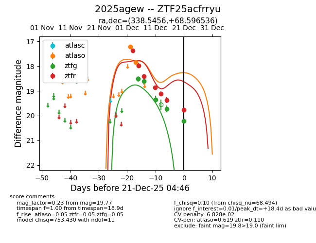
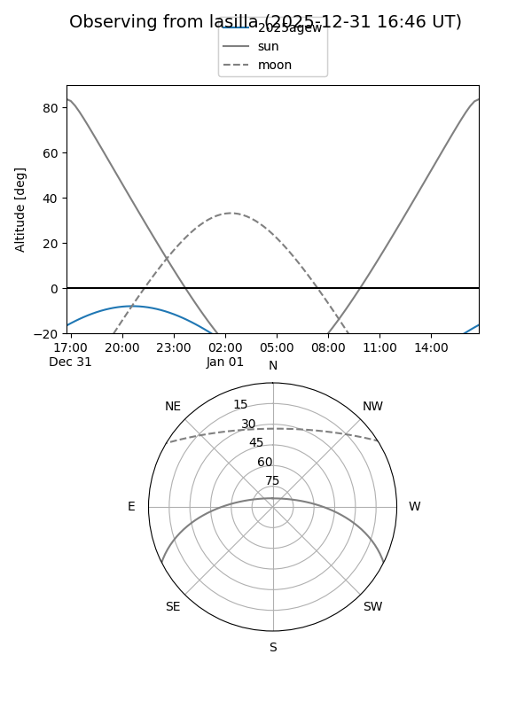
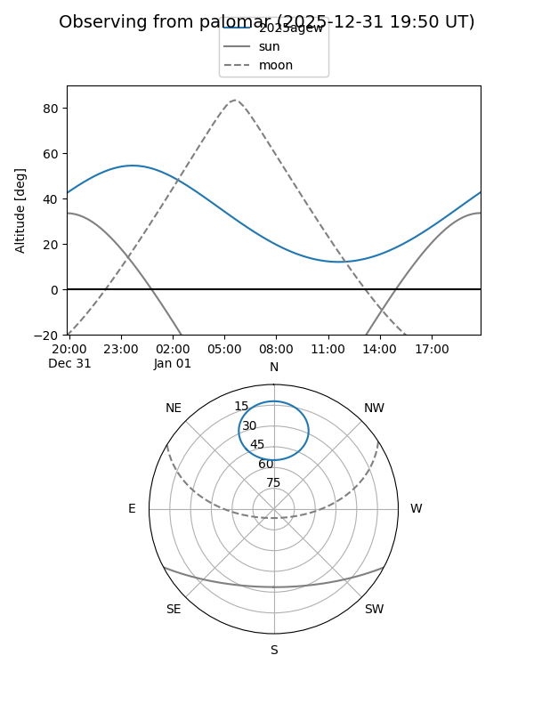
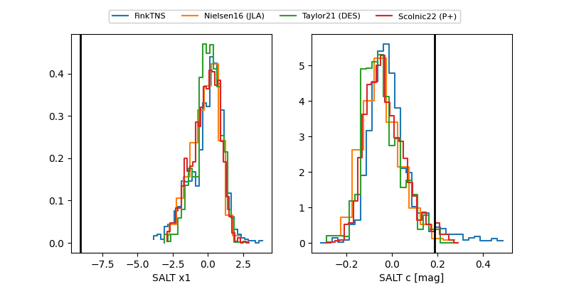

2025agew
Target 2025agew at 2025-12-18 11:17
Aliases and brokers:
FINK: fink-portal.org/ZTF25acfrryu
Lasair: lasair-ztf.lsst.ac.uk/objects/ZTF25acfrryu
ALeRCE: alerce.online/object/ZTF25acfrryu
TNS: wis-tns.org/object/2025agew
YSE: ziggy.ucolick.org/yse/transient_detail/2025agew
alt names
ZTF25acfrryu (ztf,fink_ztf)
2025agew (tns,yse)
Coordinates:
equatorial (ra, dec) = 338.5456,+68.59654
equatorial (HMS+DMS) = 22:34:10.95,+68:35:47.53
galactic (l, b) = (110.9103,+8.99077)
Photometry
last atlaso=17.99, ztfg=19.73, ztfr=19.37
3 atlaso, 4 ztfg, 6 ztfr detections
Lightcurve

Visibility


Additional plots
